사회조사분석사-2급 (2006-08-06 기출문제)
1과목: 조사방법론 I
1. 다음 중 분석대상에서 제외되어야 할 설문지가 아닌 것은?
- 설문지의 많은 부분에 대한 응답이 없는 경우
- 설문지의 페이지가 뒤죽박죽으로 섞여 있는 경우
- 설문지의 대부분에 한 번호만을 응답한 경우
- 설문지의 일부가 분실된 경우
(정답률: 알수없음)

2. 입지전적으로 기업을 크게 성장시킨 기업가의 성공비결을 알아보기 위하여 그 기업가에 대해 집중적인 연구를 하는 방법은?
- 사례연구법
- 상관연구법
- 실헙법
- 내용분석법
(정답률: 알수없음)
3. 집중면접에 대한 설명으로 맞는 것은?
- 특정한 가설을 개발하기 우해 효율적으로 이용할 수 있다.
- 면접자의 통제하에 제한된 주제에 대해 토론한다.
- 개인의 의견보다는 집단적 경험을 주로 이야기한다
- 준비된 구조화된 질문지를 이용하여 면접한다.
(정답률: 알수없음)
4. 다음의 질문방식은 어디에 속하는가?
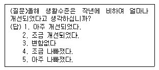
- 이분형 질문(dichotomous questions)
- 평정형 질문(rating questions)
- 서열형 질문(ranking questions)
- 해당자 질문(contingency questions)
(정답률: 58%)
5. 동일한 표본을 일정한 시간간격을 두고 반복하여 조사하는 방법은?
- 동년배집단연구(cohort study)
- 패널연구(panel study)
- 시계열연구(time-series study)
- 경향연구(trend study)
(정답률: 74%)
6. 다음 중 면접조사의 특징이 아닌 것은?
- 응답상황에 대한 통제가 용이
- 복합적인 질문의 사용이 가능
- 비언어적 의사소통이 가능
- 높은 익명성을 제공
(정답률: 알수없음)
7. 사전검사(pretest)에 대한 설명으로 틀린 것은?
- 설문지 초안을 완성한 후에 문제점을 발견하기 우해 실시한다.
- 응답자의 선정은 표집을 통해 본조사와 동일하게 한다.
- 조사방법은 본조사와 동일하게 한다.
- 반드시 많은 응답자를 확보할 필요는 없다.
(정답률: 50%)
8. 종단적(longitudinal) 조사의 특징으로 옳지 않은 것은?
- 일반적으로 비용이 많이 드는 조사 방법이다.
- 조사대상자의 태도 및 행동변화에 대한 분석에 유리하다
- 자료 손실의 가능성이 크기 때문에 연구대상의 대표성이 문제가 될 수 있다.
- 조사방법의 수정, 보완에 융통성이 크다.
(정답률: 40%)
9. 설문지 회수율을 높이는 노력으로 적절하지 않은 것은?
- 독촉편지를 보내거나 독촉전화를 한다.
- 겉표지에 설문내용의 중요성을 부각시켜 응답자가 인식하게 한다.
- 개인신상에 민감한 질문들을 가능한 줄인다.
- 폐쇄형 질문의 수를 가능한 줄인다.
(정답률: 73%)
10. 질문지의 표지 인사말에 반드시 포함될 필요가 없는것은?
- 연구의 목적
- 연구의 방법
- 연구자나 연구기관
- 자료내용에 대한 비밀보호
(정답률: 70%)
11. 다음 중 전화조사의 장점으로 볼 수 있는 것은?
- 표본의 대표성을 유지하는 것이 용이하다.
- 응답자에게 시간적 여유를 주어 응답하게 할 수 있다
- 면접자의 개인차를 배제할 수 있다
- 신속하게 조사할 수 있다.
(정답률: 55%)
12. 사후실험 설계의 설명으로 틀린 것은?
- 독립변수를 조작할 수 없는 상태 또는 이미 노출된 상태에서 변수들간의 관계를 검증하는 방법이다.
- 독립변수에 대한 통제가 윤리적으로 바람직하지 않을 때 사용될 수 있다.
- 일반적인 실험설계보다 종속변수에 영향을 줄 수 있는 변수의 통제가 용이하다.
- 실제 상황에서 검증하기 때문에 일반적인 실험설계에 비해서 현실성이 높은 결과를 얻을 수 있다.
(정답률: 알수없음)
13. 우편조사에서 비슷한 응답항목이 지나치게 많아 어떤 질문이건 첫 번째 응답항목을 선택하는 위험성이 있는 효과는?
- 1차 정보효과(primacy effect)
- 최근 정보효과(recency effect)
- 동조효과(acquiescence effect)
- 후광효과(halo effect)
(정답률: 39%)
14. 다음 중 실험의 타당성을 해치는 요인으로 가장 거리가 먼 것은?
- 선별효과
- 가정이입효과
- 실험효과
- 조사도구효과
(정답률: 알수없음)
15. 다음 중 폐쇄형 질문의 특성이 아닌 것은?
- 응답자에게 창의적인 자기표현의 기회를 줄 수 있다.
- 질문에 대한 대답이 표준화되어 있기 때문에 비교가 가능하다.
- 밝히기를 주저하거나 사생활과 관련되는 민감한 주제에 적합하다.
- 부호화(coding)와 분석이 용이하여 시간과 경비를 절약할 수 있다.
(정답률: 알수없음)
16. 교수법의 차이가 다동들의 무장독해능력에 어떤 영향을 미치는가를 알아보기 위해 초등학교 아동 50명을 대상으로 연구를 하려고 한다. 어떤 연구방법이 가장 적당한가?
- 참여관찰법
- 내용분석법
- 실험법
- 조사연구법
(정답률: 22%)
17. 다음 중 면접조사의 장점이 아닌 것은?
- 우편조사보다 응답률이 높다.
- 신뢰성 있는 대답을 얻을 수 있다
- 응답자와 그 주변의 상황들을 직접 관찰할 수 있다.
- 면접자의 개인별 차이에서 오는 영향이나 오류를 피할 수 있다.
(정답률: 55%)
18. 온라인 조사의 취약점으로 지적되는 것은?
- 응답자의 수
- 신뢰도
- 질문문항
- 질문유형
(정답률: 알수없음)
19. 최근 텔레비전 프로그램에 등장하고 있는 폭력적 장면과 선정적 장면에 대해서 어떤게 생각하십니까? 라는 질문은 주로 어떤 오류를 범하고 있는가?
- 부적절한 언어의 사용
- 비윤리적 질문
- 전문용어의 사용
- 이중적 질문
(정답률: 55%)
20. 조사자가 전화기와 연결된 주컴퓨터의 단말기 또는 개인용 컴퓨터의 화면 앞에 앉아서 전화를 건 후 화면에 나타나는 질문을 읽고 응답을 입력시켜 나가는 자료수집방법은?
- 컴퓨터를 이용한 전화조사
- 컴퓨터를 이용한 면접
- 컴퓨터를 이용한 자기면접
- 컴퓨터 자계식 자료수집
(정답률: 46%)
21. 다음 중 인과적 관계의 검정 요인에 속하지 않는 것은?
- 외적변수
- 매개변수
- 선행변수
- 잠재변수
(정답률: 29%)
22. 획득하고자 하는 정보의 내용을 대략 결정한 다음에 이루어져야 할 질문지 작성과정으로 맞는 것은?
- 자료수집방법의 결정->질문내용의 결정->질문형태의 결정->질문순서의 결정
- 질문형태의 결정->자료수집방법의 결정->질문내용의 결정->질문순서의 결정
- 질문내용의 결정->질문형태의 결정->질문순서의 결정->자료수집방법의 결정
- 질문내용의 결정->질문순서의 결정->질문형태의 결정->자료수집방법의 결정
(정답률: 알수없음)
23. 연구의 단위를 혼동하여 집합단위의 자료를 바탕으로 개인의 특성을 추리할 때 저지를 수 있는 오류는?
- 집단주의 오류
- 생태주의 오류
- 개인주의 오류
- 환원주의 오류
(정답률: 60%)
24. 통계적 회귀의 의미로 알맞은 것은?
- 수집된 자료가 어느 특정 선을 중심으로 분포하는 현상
- 자료분석을 했을 경우 종속변수가 주요 독립변수의 변화에 따라 함께 변화하는 현상
- 타당도 높은 연구에서는 수집된 자료가 광범위하게 분포되지 않고 응집력을 갖춘 회귀성을 나타내야 한다는 것
- 사전측정에서 극단적인 점수를 얻은 경우에 사후측정에서 독립변수의 효과에 관계없이 평균치로 값이 근접하려는 경향
(정답률: 55%)
25. 피면접자가 어떤 질문에 대하여 부적합한 대답을 할 때 다시 캐내어 확인해 보는 보조 방법은?
- 인터뷰
- 투사법
- 프로빙
- 질문지법
(정답률: 75%)
26. 조사연구에서 연구문제 서술시 요구되는 특성이 아닌 것은
- 연구문제는 의문의 형태로 서술한다.
- 연구문제는 변수들간의 관계에 대해 서술한다.
- 연구문제가 꼭 경험적으로 검증되어야 하는 것은 아니다.
- 연구문제는 단순 명료한 것이 좋다.
(정답률: 29%)
27. 전화조사의 단점이 아닌 것은?
- 질문의 길이와 내용을 제한 받는다
- 표본의 대표성을 유지하기 어렵다.
- 사진,그림 등 시각적인 보조자료를 적절하게 활용할 수 없다
- 조사자들에 대한 감독이 어렵다.
(정답률: 58%)
28. 다음 중 두 변수간의 관계를 보다 정확하고 명료하게 이해할 수 있도록 밝혀주는 역할을 하는 검정요인으로만 짝지어진 것은?
- 구성변수,매개변수
- 매개변수,왜곡변수
- 선행변수,억제변수
- 외적변수,구성변수
(정답률: 60%)
29. 질문 문항의 배열순서에 대한 설명으로 틀린 것은>
- 간단한 사항을 묻는 문항을 먼저 배열한다.
- 교육수준,소득과 같은 항목은 중간에 배열한다.
- 관련성이 있는 항목은 가능한 연속하여 배열한다.
- 질문은 논리적 순서에 따라 배열한다.
(정답률: 알수없음)
30. 정치지도자.대기업경영자 등 조사대상자의 명단을 구할 수는 있으나 그들을 직접 만나기는 매우 어려운 경우 사용할 수 있는 자료수집방법은?
- 면접조사
- 집단조사
- 전화조사
- 우편조사
(정답률: 알수없음)
2과목: 조사방법론 II
31. 조사대상자들의 종교를 불교, 기독교,카톨릭,기타의 범주로 나누어 관찰한 경우 측정수준은?
- 명목척도
- 서열척도
- 등간척도
- 비율척도
(정답률: 58%)
32. 다음의 ( )에 알맞은 것은?
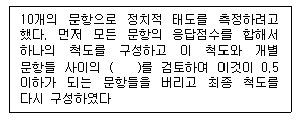
- 상관계수
- 요인부하치
- 회귀계수
- 경로계수
(정답률: 알수없음)
33. 한 개인의 태도를 측정하기 위해 사용된 문항들이 단일차원에 속하는지를 확인 할 수 있는 척도는?
- 서스톤 척도
- 리커트 척도
- 거트만 척도
- 의미분화척도
(정답률: 알수없음)
34. 다음 설문 문항의 측정수준은?
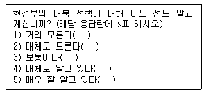
- 명목척도
- 서열척도
- 등간척도
- 비율척도
(정답률: 36%)
35. 특정 지역 전체인구의 1/4은 A구역에,3/4은 B구역에 분포되어 있고, A,B두 구역의 인구가 다 같이 60%가 고졸자이고 40%가 대졸자라고 가정하자. 이들 A,B 두 구역의 할당표본표 집의 크기를 1,000명으로 제한한다면, A지역의 고졸자와 대졸자는 각기 몇 명씩 조사해야 할까?
- 고졸 100명, 대졸 150명
- 고졸 150명, 대졸 100명
- 고졸 450명, 대졸 300명
- 고졸 300명, 대졸 450명
(정답률: 알수없음)
36. 유사등간기법은 어떤 척도에 해당하는가?
- 거트만 척도
- 리커트 척도
- 서스톤 척도
- 의미분화척도
(정답률: 55%)
37. 크론바하 α에 관한 설명으로 틀린 것은?
- 표준화된 알파라고도 한다
- 값의 범위는 -1에서 +1까지이다
- 문항간 평균상관관계가 증가할수록 값이 커진다
- 문항의 수가 증가할수록 값이 커진다.
(정답률: 20%)
38. 다음 중 용어에 대한 설명으로 틀린 것은?
- 모집단은 우리가 규명하고 하는 집단의 총체이다.
- 표집단위는 표집과정의 각 단계에서의 표집대상을 지칭한다.
- 관찰단위란 직접적인 조사대상을 의미한다.
- 표집간격이란 표본을 추출할 때, 추출되는 표집단위와 단위간의 간격을 의미한다.
(정답률: 알수없음)
39. 연구자가 어떤 변수의 측정 수준을 결정 할 때 가장 중요하게 고려해야 하는 것은?
- 계량적 연구와 질적 연구를 구별해야 한다.
- 개념화 과정을 명확히 해야 한다.
- 조작화 과정을 명확히 해야 한다.
- 어떤 분석 기법들이 적절한지를 결정해야 한다.
(정답률: 알수없음)
40. 보다 동질적인 층으로부터는 비교적 적은 수의 표본을 뽑고, 다소 이질적인 층으로부터는 보다 많은 표본을 뽑음으로써 결과적으로 최소 규모의 표본으로 정확성을 유지할 수 있도록 하는 추출방법은?
- 비례분배
- 최적분배
- 데밍분배
- 네이만분배
(정답률: 0%)
41. 표본오차와 표본크기간의 관계를 올바르게 설명한 것은?
- 표본오차와 표본크기는 항상 부의 관계를 유지한다
- 표본오차와 표본크기는 정의 관계를 유지할 때도 있다
- 층화임의표본표집 과정에서 발생하는 오류는 표본크기에는 영향을 미치지 않는다.
- 표본의 대표성은 표본크기아 항상 정(正)의 관게에 있으므로,표본오차와 표본크기 역시 정(正)의 관계를 유지한다.
(정답률: 알수없음)
42. 층화표집에 대한 설명 중 틀린 것은?
- 모집단을 동질적인 하위집단으로 재구성한다
- 동질적인 하위집단에서의 표집오차가 이질적인 집단에서의 오차보다 작다는데 논리적인 근거를 둔다.
- 모집단을 일련의 하위집단들로 층화시킨 다음 각 하위집단에서 적절한 수의 표본을 뽑아내는 방법이다
- 단순무작위표집보다 간편하고 빠르다.
(정답률: 42%)
43. 4년제 대학에 다니는 대학생의 정치의식을 조사하기 위해 학년(grade)과 성(sex)에 따라 할당표집을 할 때 표본추출을 위한 할당 범주는 몇 개인가?
- 2개
- 4개
- 8개
- 16개
(정답률: 알수없음)
44. 확률표집의 논리를 적용하면서, 필요에 따라 표집률을 달리하는 표집방법은?
- 층화확률표집
- 계통확률표집
- 집락확률표집
- 가중확률표집
(정답률: 19%)
45. 경험의 세계와 추상적인 관념의 세계를 연결시켜 주는 수단으로서 일정한 법칙에 따라 사물이나 사건의 속성에 숫자를 부여하는 과정은?
- 측정
- 척도
- 조작적 정의
- 부호화
(정답률: 알수없음)
46. 대학수학능력시험(수능)은 대학에서 공부할 수 있는 능력을 측정하기 위해서 치루어진다. 따라서 이론적으로 볼 때 수능 점수가 높은 사람은 대학에서도 높은 학점을 받을 것으로 예측할 수 있다. 수능시험의 타당도를 평가하기 위한 방법으로서, 수년간에 걸쳐 학생 개개인의 입학시 수능점수와 입학 후 첫 학년도 평균학점간의 상관계수를 살펴보았다면, 이는 다음 중 어느 것과 가장 밀접한 연관이 있는가?
- 표면 타당도
- 내용 타당도
- 동시적 타당도
- 구성체 타당도
(정답률: 알수없음)
47. 표본추출의 대표성에 관한 설명으로 틀린 것은?
- 대표성의 문제란 표본이 모집단을 대표하여 일반화가 가능한 것인가의 문제이다
- 표본추출에는 우연성이 많아야 대표성이 환보된다
- 표본은 모집단과 변수의 특성이 유사한 분포를 갖도록 추 출되어야 한다.
- 조사에 있어 어떤 것이 중요한 가설인가에 따라 대표성이 달라진다.
(정답률: 70%)
48. 리커트 척도의 문항분석방법 중 내적일관성을 검증하는 방법이 아닌 것은?
- 반분법에 의한 spearman-Brown 공식
- 요인분석법에 의한 일관성 검증
- 판별력(the discriminatory power)의 검증법
- 개별문항과 척도와의 상관분석
(정답률: 알수없음)
49. 서스톤 척도를 구성하는 순서가 올바르게 나열된 것은?
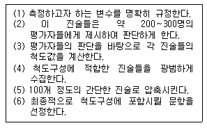
- (1) -(4) - (5) - (2) - (3) - (6)
- (1) -(5) - (2) - (4) - (3) - (6)
- (1) -(4) - (2) - (5) - (3) - (6)
- (1) -(4) - (2) - (3) - (5) - (6)
(정답률: 31%)
50. 표집구간내에서 첫 번째 번호만 무작위로 뽑고 다음부터는 매 K번째 요소를 표본으로 선정하는 표집방법은?
- 단순무작위 표집
- 계통표집
- 층화표집
- 집락표집
(정답률: 알수없음)
51. 리커트 척도의 단점에 해당되지 않는 것은?
- 엄격한 의미에서의 등간척도가 될 수 없다.
- 각 문항의 점수를 더한 총점으로는 각 문항에 대한 응답의 강도를 정확히 알 수 없다.
- 척도가 측정하고자 하는 개념을 제대로 측정하고 있는지의 문제가 여전히 남는다.
- 문항간의 내적 일관성을 확인 할 수 없다.
(정답률: 50%)
52. 표본의 크기에 영향을 미치지 않는 것은?
- 유의수준으로 대변되는 정확도
- 신뢰구간
- 모집단인구의 특성
- 조사대상 지역의 지리적 여건
(정답률: 알수없음)
53. 표본추출방법에 대한 설명 중 틀린 것은?
- 단순무작위표집을 하기 위해서는 모집단에 대한 명부를 표집틀로 반두시 가지고 있어야 한다.
- 모집단에 대한 명부가 일정한 주기성을 가지고 있을 때 이 주기성 때문에 편중된 표집을 할 위험이 있는 표집방법은 층화표집이다.
- 층화표집은 단순무작위추출에서 얻어진 표본보다 모집단을 더 잘 대표하고 있다고 볼 수 있다.
- 유의표집은 연구대상자의 일부분은 쉽게 식별할 수 있지만 모집단 전체를 모두 확인하는 일이 거의 불가능할 경우 사용한다.
(정답률: 알수없음)
54. 측정의 타당도를 평가하는 기준으로 틀린 것은?
- 측정시 척도가 일반화 하려는 개념을 어느 정도로 잘 반영하는가의 자명성을 기준으로 평가한다.
- 사용하고 있는 측정도구의 측정치를 기준이 되는 측정도구의 측정치와 비교하여 실용성의 기준으로 평가한다
- 측정도구의 측정치를 연구자가 제시하는 이론과 개념의 틀 자체의 맥락에서 이론적 적합성을 기준으로 평가한다.
- 여러 개의 문항을 사용하여 측정하는 데 있어서 각 문항이 측정치의 지표로서 갖는 일관성을 기준으로 평가한다.
(정답률: 46%)
55. 다음 중 비확률표집이 아닌 것은>
- 편의표집
- 유의표집
- 할당표집
- 층화표집
(정답률: 알수없음)
56. 표본오차를 줄이기 위한 방법이 아닌것은?
- 가능하면 표본의 크기를 크게 한다.
- 비용이 많이 들고 완전한 표본추출틀을 마련하기 어려운 전국규모의 조사시 집락표본추출법을 사용한다.
- 다단계 집락표본추출법을 사용하는 경우에는 가능하면 집락 단계의 수를 많게 한다.
- 전화조사를 하는 경우 이미 마련된 전화번호부를 사용하기보다는 무작위전화걸기법을 사용한다.
(정답률: 0%)
57. 다음 중 측정오차의 원인이 아닌 것은?
- 측정자의 잘못 때문이다
- 측정자나 피츠정자가 지니는 지적 사고력이나 판단력에 기인한다.
- 측정소재의 관련이나 시.공간의 제약 때문이다
- 사회과학에서 측정오차발생은 예외적 현상이다
(정답률: 39%)
58. 다음 중 신뢰도를 측정하는 방법이 아닌 것은?
- 재검사법
- 복수양식법
- 반분법
- 내용검사법
(정답률: 알수없음)
59. A후보와 B후보의 이미지 비교프로파일을 보여주는 아래의 그림은 어느 척도를 사용한 것인가?
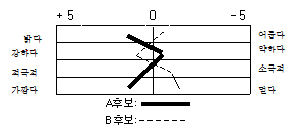
- 서스톤 척도
- 리커트 척도
- 거트만 척도
- 의미분화척도
(정답률: 54%)
60. 관련 문항간의 높은 상관관계를 전제로 하며, 각 응답 문항을 일률적으로 점수화하여 전체 문항들의 평점을 총화하는 방식으로 척도값을 산출하는 것은?
- 서스톤 척도
- 리커트 척도
- 보가더스 척도
- 거트만 척도
(정답률: 알수없음)
3과목: 사회통계
61. n개의 베르누이시행에서 성공의 개수를 x라고 하면 x의 분포는?
- 기하분포
- 음이항분포
- 초기하분포
- 이항분포
(정답률: 알수없음)
62. 10개의 전구가 들어 있는 상자가 있다. 그 중 2개의 불량품이 포함되어 있다. 이 상자에서 4개의 전구를 비복원으로 꺼내었을 때 그 중 1개가 불량품일 확률은?
- 0.53
- 0.076
- 0.25
- 0.8
(정답률: 알수없음)
63. 상관계수의 설명으로 옳은 것은?
- 상관계수의 값은 언제나 음수이다
- 상관계수의 값은 언제나 양수이다
- 공분산의 값이 0이면 상관계수는 1이다
- 상관계수의 값은 언제나 -1과 1사이에 있다.
(정답률: 알수없음)
64. 통계적 검정의 오류 중 제1종 오류에 해당되는 것은?
- 귀무가설이 참임에도 불구하고 이를 기각
- 귀무가설이 참이므로 이를 채택
- 귀무가설이 거짓이므로 이를 채택
- 귀무가설이 거짓임에도 이를 기각
(정답률: 59%)
65. 어느 고등학교 1학년 학생 1000명의 성적분포가 평균 80점, 표준편차 20점인 정규분포로 나타났다. 이 경우에 60점이상 100점 이하의 점수를 얻은 학생은 대략 명 명인가? (단, P(Z≤0.5)=0.68, P(Z≤1.0)=0.84, P(Z≤1.5)=0.93, P(Z≤2.0)=0.98)
- 350
- 680
- 790
- 850
(정답률: 29%)
66. 눈의 수가 3이 나타날 때까지 계속해서 주사위를 던지는 실험에서 주사위를 던진 횟수를 확률변수 X라고 할 때, X의 기댓값은?
- 3.5
- 5
- 5.5
- 6
(정답률: 43%)
67. 한국고등학교의 시험 결과가 아래 표와 같다. 자료에 대한 설명으로 맞는 것은?
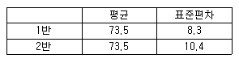
- 1반과 2반의 성적은 평균값이 같으므로 같다.
- 1반은 2반에 비해 성적분포가 고르다
- 2반은 1반에 비해 성적분포가 고르다.
- 2반의 표준편차가 더 크므로 최고점의 학생은 항상 2반에 있다.
(정답률: 70%)
68. 단순회귀분석에서 회귀직선의 유의성 검정을 위해 사용되는 검정통계량에 대한 설명으로 올바른 것은?
- t-검점통계량만을 사용해야 한다.
- F-검점통계량만을 사용해야 한다
- 카이제곡 범정통계량을 주로 사용해야 한다.
- t-검점 또는 F-검점 통계량 모두 사용할 수 있다.
(정답률: 59%)
69. 단순회귀분석의 가정에 대한 설명으로 옳지 않은 것은?
- 오차항은 정규분포를 따른다
- 독립변수와 종속변수 사이에 선행관계가 존재한다.
- 오차항의 기대값은 0이다
- 오차항들의 분산이 항상 같지는 않다.
(정답률: 10%)
70. 어느 고등학교 1학년 학생 전체 1000명의 IQ를 조사했더니 평균이 1⑤이고 표준편차가 15로 나타났다. 그 학교 1학년 학생 중 IQ가 75에서 135사이에 있는 학생은 최소한 몇 명일까?
- 750명
- 850명
- 900명
- 950명
(정답률: 알수없음)
71. 확률변수 X의 분산이 16, 확률변수 Y의 분산이 25, 두 확률변수의 공분사이 -10 일때, X, Y의 상관계수는?
- -1
- -0.5
- 0.5
- 1
(정답률: 40%)
72. 다음 표는 성별, 혼인상태별 교차표이다. 이 표에 대한 설명으로 틀린 것은?
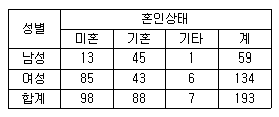
- 전체에서 여성이 차지하는 비율은 69.4%이다.
- 기혼자 가운데 여성의 비율은 48.9%이다.
- 전체에서 여성기혼자가 차지하는 비율은 42.3%이다
- 남성 가운데 미혼자의 비율은 22%이다
(정답률: 알수없음)
73. n개의 범주로 된 변수를 가변수로 만들어 회귀분석에 이용할 경우 몇 개의 가변수가 회귀분석모형에 포함되어야 하는가?
- n
- n-1
- n-2
- n-3
(정답률: 36%)
74. 대규모 모집단에서 무작위로 100명으로 된 표본과 1000명으로 된 표본을 추출하였을 때, 이 두 표본 중 어느 것이 모집단의 평균을 더 정확히 추정해 줄 수 있는가? 그 이유는 무엇인가?
- n=100인 경우이며, 표준오차가 n=1000인 경우보다 작기 때문이다.
- n=100인 경우이며, 표준오차가 n=1000인 경우보다 크기 때문이다.
- n=1000인 경우이며, 표준오차가 n=100인 경우보다 작기 때문이다.
- n=1000인 경우이며, 표준오차가 n=100인 경우보다 크기 때문이다.
(정답률: 알수없음)
75. 혈액검사의 결과 Rh-형일 확률은 0.⑤라고 한다. 임의로 두사람의 혈액을 검사했을 때 확률값이 0.1에 가까운 것은?(오류 신고가 접수된 문제입니다. 반드시 정답과 해설을 확인하시기 바랍니다.)
- 두사람 모두 Rh-일 확률
- 둘 모두 Rh+일 확률
- 두사람 중 적어도 한사람은 Rh-일 확률
- 한사람은 Rh- 그리고 나머지 한사람은 Rh+일 확률
(정답률: 50%)
76. 두 변수에 대한 분할표에서 두 변수의 독립성 여부를 검정하기 위하여 카이제곱검정을 실시하고자 할 때 필요한 항목만으로 구성된 것은?
- 실측도수,기대도수,자유도,평균
- 실측도수,기대도수,자유도,분산
- 실측도수,기대도수,자유도,유의수준
- 실측도수,기대도수,변동계수, 유의수준
(정답률: 55%)
77. 아래분산분석표에 관한 설명으로 틀린 것은?
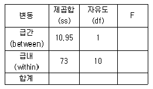
- F 통계량은 0.15이다
- 두 개의 집단의 평균을 비교하는 경우이다
- 관찰치의 총 개수는 12개이다.
- F통계량이 기준치 보다 작으면 집단사이에 평균이 같다는 귀무가설을 기가하지 않는다.
(정답률: 10%)
78. 어느 집단의 개인별 키를 표시한 것이다. 중위수는 얼마인가?
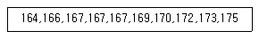
- 167
- 168
- 169
- 170
(정답률: 30%)
79. 다음 중 t-검정을 하기 위하여 요구되는 가정이 아닌 것은?
- 분포의 정상성
- 임의표본
- 분산
- 비연속적 척도
(정답률: 20%)
80. 반복이 없는 이원배치법 모형이 다음과 같을 때 이에 대한 설명으로 틀린 것은?
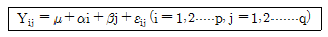
- 총 실험횟수는 pq이다.
- 두 인자가 모수인 경우를 난괴법이라고 한다.
- 반응변수는 일반적으로 정규분포를 따른다고 가정하고 이의 분산은 오차항의 분산과 같다.
- 두 인자의 효과를 알아보는 방법으로 분산분석을 이용한 F-검정을 이용한다.
(정답률: 36%)
81. 우리나라 가구의 쌀 소비량을 파악하기 위해 900가구를 무작위로 추출하여 이들 표본가구의 월간 쌀 소비량을 조사하였더니 평균 28.1kg, 표준편차 3.0kg을 얻었다.표본자료를 기초로 우리나라 가구의 월간 쌀소비량의 95%l 신뢰구간은? (단, Z0.025=1.96)
- (22.2, 34.0)
- (27.9, 28.3)
- (25.1, 31.1)
- (23.2, 33.0)
(정답률: 알수없음)
82. 가설검정에 관한 설명으로 옳은 것은?
- 검정통계량은 확률변수이다.
- 대립가설은 사전에 알고 있는 값이다
- 유의수준 α를 작게할수록 좋은 검정법이다.
- 가설이 틀렸을 때 틀렸다고 판정할 확률을 유의수준이라 한다.
(정답률: 알수없음)
83. 독립변수가 K개인 경우의 총회귀모형 y=Xβ + ε에서 회귀계수 벡터 β의 추정식 b의 분산-공분산 행렬은?
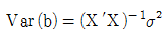
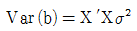
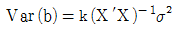
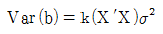
(정답률: 알수없음)
84. 두 확률변수 X,Y는 서로 독립이며 표준정규분포를 갖는다.이 때 U=X+Y, V=X-Y로 정의하면 두 확률변수 U,V는 각각 어떤 분포를 따르게 되는가?
- U,V 두 변수 모두 N(0,2)를 따른다.
- U~N(0,2)를 V~(0,1)를 따른다.
- U~N(0,1)를 V~(0,2)를 따른다.
- U,V 두 변수 모두 N(0,1)를 따른다.
(정답률: 알수없음)
85. 다음 중 두집단의 분산의 동일성 검정에 사용되는 검정통계량의 분포는?
- 정규분포
- 이항분포
- 카이제곱 분포
- F-분포
(정답률: 알수없음)
86. 단순회귀분석을 위하여 수집한 자료 10개에 대하여 다음의 요약된 값을 얻었다. 최소제곱법에 의하여 추정된 회귀직선은?
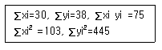
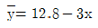
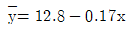
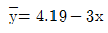
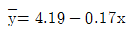
(정답률: 29%)
87. 분포의 비대칭 정도와 이상점의 개수 및 크기 증을 파악할 수 있으며 이를 이용하여 주어진 자료들이 정규분포를 따르는 모집단으로부터 얻어진 것인지의 여부를 판단하는데 도움이 되는 것은?
- 스토그램
- 상자그림
- 줄기-잎 그림
- 삼점도
(정답률: 알수없음)
88. 어느 공장에서 생산되는 나사못의 10%가 불량품이라고 한다. 이 공장에서 만든 나사못 중 400개를 임의로 뽑았을 때 불량품 개수 X의 표본분포의 평균과 표준편차는?
- 평균 :30, 표준편차 :6
- 평균 :40, 표준편차 :36
- 평균 :30, 표준편차 :36
- 평균 :40, 준편차 :6
(정답률: 알수없음)
89. 어느 여론조사기관에서 고등학교의 흡연율을 조사하고자한다. 흡연율의 95% 추정오차 한계가 1% 이내가 도기 위한 표본의 크기는? (단,표준정규분포를 따르는 확률변수 Z는 P(Z＞1.96)=0.025를 만족한다.)
- 6604
- 7604
- 8604
- 9604
(정답률: 알수없음)
90. 단순선형회귀모형 y=β0+β1+ɛ을 고려하여 자료들로부터회귀식을 추정하고 다음과 같은 분산분석표를 얻었다. 이 때 결정계수는 얼마인가?
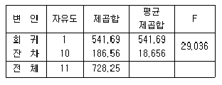
- 0.7
- 0.72
- 0.74
- 0.76
(정답률: 알수없음)
91. A신문사에서 성인 1000명을 대상으로 현직 대통령에 대한 지지도를 조사한 결과 60%의 지지율을 얻었다. 95%의 신뢰수준에서 이번 조사의 오차한계는 얼마인가? (단, 95% 신뢰수준의 Z값은 ±1.96으로 한다.)
- ±2.8%
- ±2.9%
- ±3.0%
- ±3.1%
(정답률: 9%)
92. 어느 여행사에서 앞으로 1년 이내에 어학연수를 원하는 대학생들의 비율을 조사하기를 원한다. 95%신뢰수준에서 참 비율과의 오차가 3% 이내가 되도록 하기 위하여 최소한 몇 명의 대학생을 조사해야 하는가? (단, Z0.⑤=1.645, Z0.025=1.960
- 250
- 435
- 752
- 1067
(정답률: 27%)
93. IQ와 수학성적과의 관계를 검정하기 위하여 1000명의 학생을 무작위로 뽑아 적률상관계수를 구했더니 0.78이었다. 만일 당신이 극단적이 값들의 영향력을 줄이기 위하여 IQ변수의 1사분위값과 3사분위값 사이에 있는 표본들만으로 다시 IQ와 수학성적의 적률상관계수를 구한다면 어떤 결과가 예측되는가?
- 적률상관계수가 높아진다
- 적률상관계수가 낮아진다
- 적률상관계수는 변화가 없다
- 적률상관계수가 1이 된다.
(정답률: 10%)
94. 다음의 표에 제시된 조사결과는 연령과 정치적 성향과의 관계를 분할표로 나타낸 것이다. 이 표로부터 카이자승의 값은?
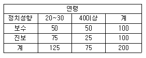
- 10.11
- 13.33
- 16.55
- 18.77
(정답률: 알수없음)
95. 두 모평균의 차이에 대한 검정의 설명으로 틀린 것은?
- 두 모집단에 대해 독립의 가정이 필요하다.
- 소표본에서 분산을 모르는 경우 t 검정을 실시한다.
- 소표본인 경우 모집단에 대해 통상적으로 정규분포를 가정한다.
- 대표본의 경우에는 분산을 모르는 경우에도 정규(z)검정을 실시한다.
(정답률: 알수없음)
96. 아래 표는 두 변수 (X,Y)에 대해 조사한 자료를 요약한 것이다. 이 자료에 대해 단순선형모형 Y1=β0+β1X1+ɛ1를 가정하고 최소자승법에 의해 모수를 추정하고자 한다. β1을 구하시오.
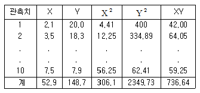
- 21.7
- -3.0
- -1.90
- 5.37
(정답률: 25%)
97. 붉은 공 2개와 흰 공 4개가 들어있는 상자에서 복원으로 5개의 공을 뽑았을 때 그 중 2개가 붉은 공이 뽑힐 확률은?
- (1/3)2=1/9
- (1/3)2x (2/3)3=1/9x8/27= 8/243
- 10x(1/3)2= 10/9
- 10x(1/3)2x (2/3)3= 80/243
(정답률: 알수없음)
98. 지난 20여년 동안 월남전에 참전했던 6,600명의 제대장병표본중에서 39%가 고엽제의 휴유증으로 생각되는 증상을 경험한 적이 있다고 한다. 월남참전군인 가운데서 고엽제 휴유증으로 불 수 있는 증상을 경험했다고 추정되는 사람의 비율에 대한 95% 신뢰구간은? (단, Z 값은 1.96)
- 0.36≤p≤0.41
- 0.38≤p≤0.40
- 0.35≤p≤0.43
- 0.37≤p≤0.45
(정답률: 55%)
99. 임의화(랜덤화)에 관한 설명으로 틀린 것은?
- 임의화는 통계적 결론의 객관성을 보장하는 방법이다.
- 임의화는 이상점이 나타나지 않도록 하는 통계적 방법이다.
- 임의화는 표본 추출시 사용하는 방법이다.
- 임의화를 하지 않으면 자료에 대한 적절한 통계적 해석을 얻을 수 없을 뿐만 아니라, 결과에 대한 확률적 진술이 불가능하다.
(정답률: 40%)
100. 중심극한정리는 어느 분포에 관한 것인가?
- 모집단
- 표본
- 모집단의 평균
- 표본의 평균
(정답률: 알수없음)